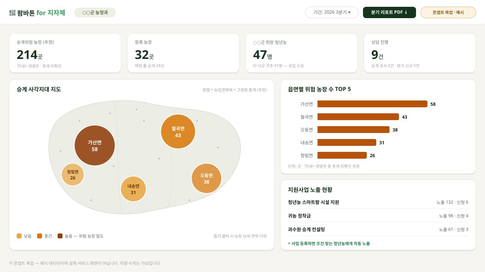

왜 지금인가
55.8%
65세 이상 농가인구 비율 — 역대 최고
49만 가구
70세 이상 경영주 — 전체의 과반
4,601가구
40세 미만 청년 경영주 — 4년 만에 1/3로, 역대 최저
출처: 통계청 2024 농림어업조사 · 후계자를 찾지 못한 농장은 청년농과 만날 통로 없이 멈춰 서고 있습니다.
팜바톤은 이렇게 잇습니다 — 실서비스 운영 중
① 농장주: 주소만 입력하면 팜맵·개별공시지가·실거래가·농산물 소득조사·KAMIS 등 공공데이터를 결합해
인수 검토가 범위(참고용 추정)와 예상 소득을 즉시·무료 산출 — 생성형 AI가 농장주·청년농 관점별 리포트로 설명
② 청년농: 희망 지역·작목·자본 조건으로 승계 가능 농장을 점수순 추천 → 인앱 상담·채팅으로 논의 시작
farmbaton.vercel.app
— 별도 설치 없이 스마트폰에서 바로 동작합니다.
귀 기관에 제안드리는 것 — 무상 실증(파일럿) 협력
제안 1관내 승계 희망 농가 시범 등록
농업기술센터·읍면 창구에서 승계 고민 농가 3~5곳을 연계해 주시면, 저희가 등록·검토 리포트 산출까지 무상 지원합니다.
제안 2관내 청년농 지원사업 등록·노출
귀 기관 지원사업을 플랫폼에 등록하면, 조건이 맞는 매칭 청년농에게 자동으로 노출됩니다. 등록·운영 무상.
제안 3승계 모니터링 대시보드 실증
읍면별 승계 위험 농장 분포·유치 실적을 보여주는 행정용 대시보드(우측 콘셉트)를 귀 기관 의견을 받아 함께 설계하고자 합니다.
| 발굴 | 청년농 유치·경영이양 사업의 정책 대상자를 데이터로 탐색 |
|---|
| 보고 | 등록 농가·유입 청년농 수요·상담 건수를 분기 실적 리포트로 제공 |
|---|
| 집행 | 지원사업을 실수요 청년농에게 직접 노출 — 모집 채널 확보 |
|---|

▲ 승계 모니터링 대시보드 — 콘셉트 목업(예시 데이터, 지명·수치는 가상)